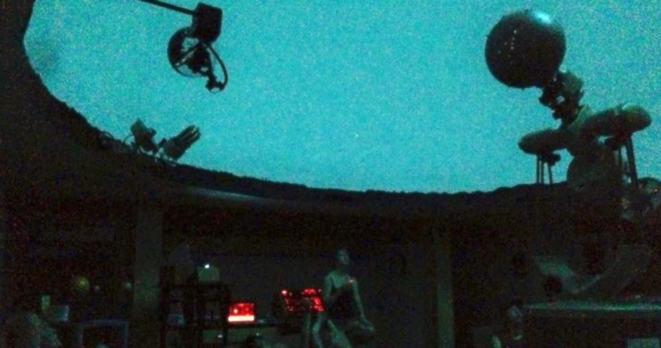
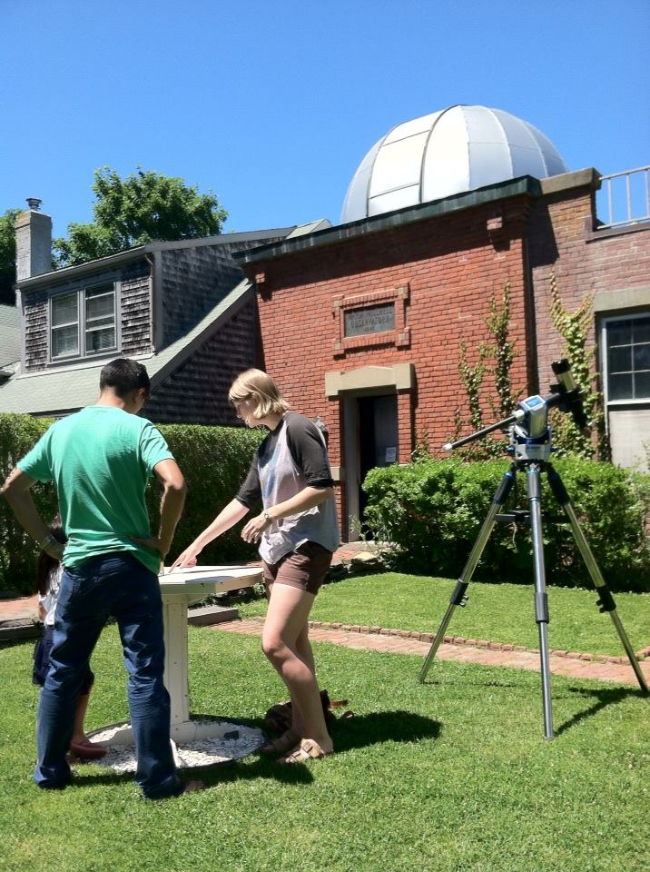
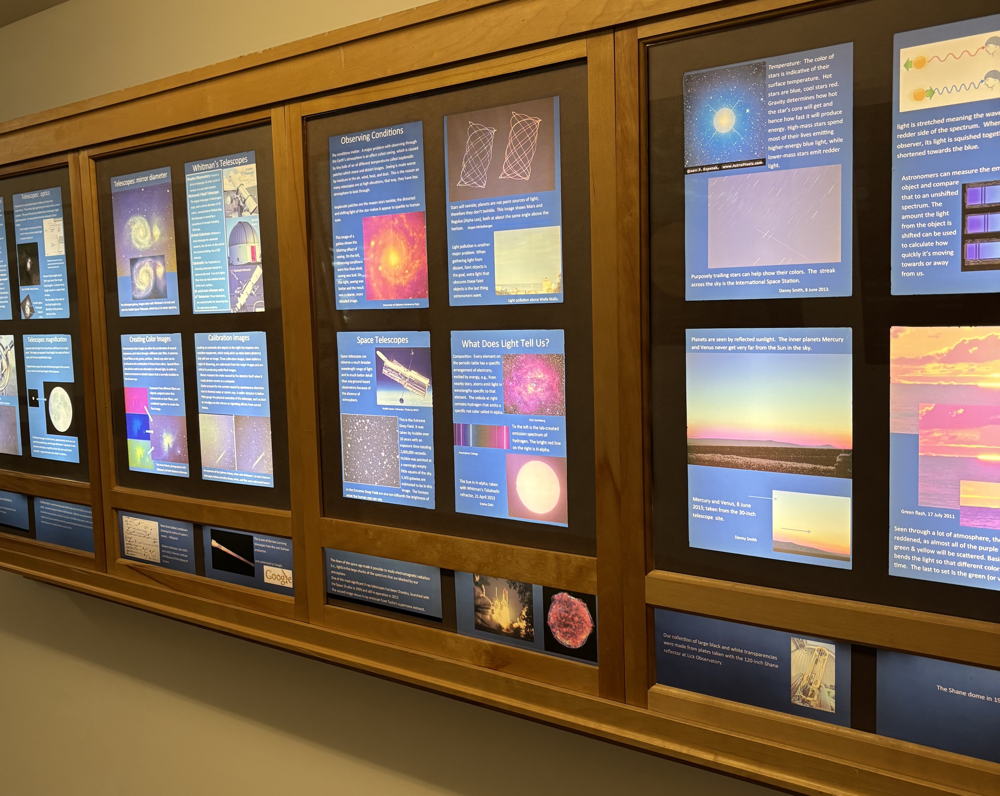
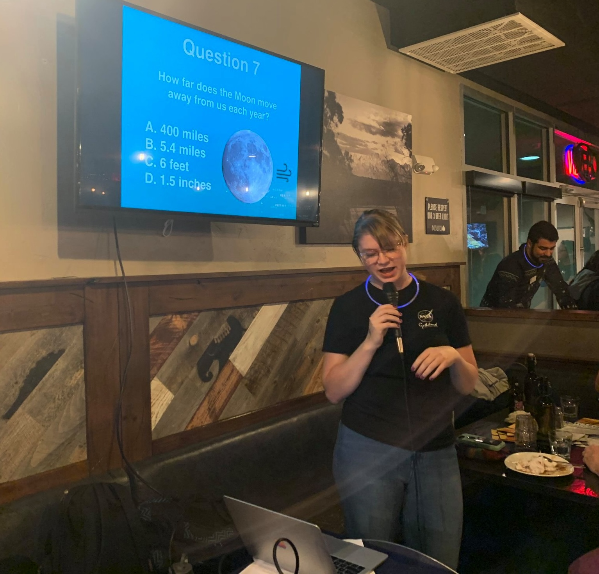

Throughout my career, I have derived a great deal of joy and fulfillment from both mentoring students and running or taking part in outreach events for the public.
Mentorship
As a mentor, I am committed to encouraging, promoting, and helping any student I work with, which includes keeping in touch after our time working together and making myself available for additional support or advice. My personal philoophy on mentorship is that as the mentor or advisor, it is your job to create an environment where any student can learn a lot, feel safe to ask questions without a fear of judgement, and have a great and positive experience at the same time.
 As an undergrad student, I worked as a lab TA for both physics and astronomy lab, as well as a physics and astronomy tutor. In the latter half of grad school, I worked with younger grad students to help introduce them to studying Jupiter's atmosphere. As a postdoc at JPL, I helped manage ~20-25 interns over 2021-2024 under Glenn Orton -- primarily Richard McKee (2021-2022) and Kennedi White (2023-2025) -- which entailed helping guide them through analyzing images and running models of Jupiter's atmosphere, helping troubleshoot errors in students' programs, providing advice on applying to graduate school/feedback on applications, etc. Kennedi successfully applied to grad school and started a PhD program at UCSC in 2025. At Caltech, I co-mentored rising sophomore Alana Nisperos over Summer 2025 on retrieving the properties of protoplanetary disks; Alana went on to place as a finalist in a Caltech speaking contest later that year (right), and present her research at multiple conferences. This summer (2026), I will be working with an undergraduate student from my alma mater on Jupiter observations after we won a grant through Whitman College to help her find an external project advisor. Most recently, I was invited to be a panelist at a 2026 Caltech Mentoring Conference keynote event "In Conversation About Mentorship.”
As an undergrad student, I worked as a lab TA for both physics and astronomy lab, as well as a physics and astronomy tutor. In the latter half of grad school, I worked with younger grad students to help introduce them to studying Jupiter's atmosphere. As a postdoc at JPL, I helped manage ~20-25 interns over 2021-2024 under Glenn Orton -- primarily Richard McKee (2021-2022) and Kennedi White (2023-2025) -- which entailed helping guide them through analyzing images and running models of Jupiter's atmosphere, helping troubleshoot errors in students' programs, providing advice on applying to graduate school/feedback on applications, etc. Kennedi successfully applied to grad school and started a PhD program at UCSC in 2025. At Caltech, I co-mentored rising sophomore Alana Nisperos over Summer 2025 on retrieving the properties of protoplanetary disks; Alana went on to place as a finalist in a Caltech speaking contest later that year (right), and present her research at multiple conferences. This summer (2026), I will be working with an undergraduate student from my alma mater on Jupiter observations after we won a grant through Whitman College to help her find an external project advisor. Most recently, I was invited to be a panelist at a 2026 Caltech Mentoring Conference keynote event "In Conversation About Mentorship.”

I also place a great deal of importance on helping students from underrepresented backgrounds in STEM. I am a frequent volunteer with Científico Latino, an initiative to promote an environment of inclusivity in STEM and increase the number of scientists from underrepresented backgrounds in higher education in the sciences. My roles have included Graduate School Mentorship Initiative (GSMI) mentor for students applying to graduate programs in 2022 and 2025, as well as running mock interviews, etc. As a diversity committee co-chair on the Caltech Postdoctoral Committee, I initiated and hosted bystander intervention training for situations commonly experienced in academic settings. I feel very strongly about the responsibility of each scientist to create a welcoming and inclusive environment for everyone in the field and everyone who wants to enter it, and that creating such an environment starts with simply always being kind, understanding, and helpful.
Outreach

I have always actively sought out opportunities to engage in public outreach as much as I've been able. As an undergrad, I ran shows in Whitman College's analogue planetarium and wrote informative posters for the hallway outside (that as of 2025, are still there!) (see image at right). During my NSF REU at the Maria Mitchell Observatory on Nantucket in 2014, I helped run semi-weekly public observatory nights and gave public tours of the historical Vestal Street Observatory (above).

In grad school at New Mexico State University, the astronomy department was well-known locally for its outreach program, and was well-placed in southern New Mexico to serve not only the city of Las Cruces but El Paso and many surrounding rural communities that might not otherwise have access to such resources. After participating in many outreach events during my first couple years, I ran the outreach program from 2017-2018 which required a great deal of communication and organization skills in order to coordinate volunteers, the activities they would host, and the events they would attend. We would do all sorts of events: career days at elementary schools, outreach talks on campus, host events for lunar eclipses, help students build their own comets out of dry ice, bring out antique telescopes built by the discoverer of Pluto for farmer's markets, etc. Doing and coordinating outreach at NMSU was incredibly rewarding, and in all I volunteered 120+ hours of my time before the pandemic (not including the coordination efforts). In late 2019, I worked with a professor to initiate and coordinate a new chapter of Astronomy on Tap in Las Cruces (see me hosting the inaugural event, left). We were only able to hold 2 events before COVID locked things down, but the local chapter still hosts events and enriches the community.
As a postdoc it has been much harder to make time for outreach, but I hope to engage with the public more soon!